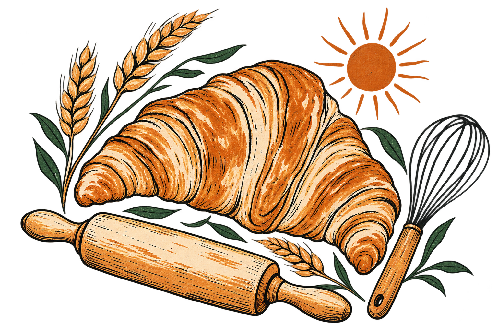
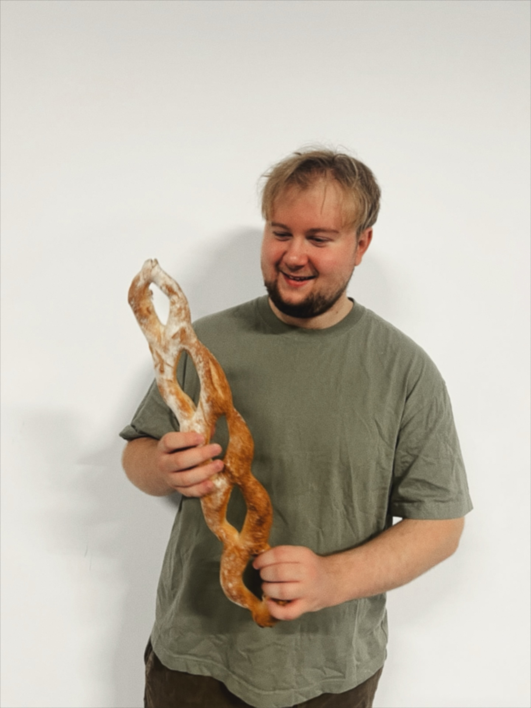

Partybrot
BREADA tear-and-share bread decorated with a variety of seeds.
A STUDENT BAKING PORTFOLIO
Breads, pastries, viennoiserie, the whole lot.
And always something new to try.

HELLO, I’M ARONAS

I’m in my third year of a bachelor’s degree in Pastry and Baking at TU Dublin.
I’ve loved baking since I was young, and I still do. At first it was a hobby. I enjoyed what I made, but the more I baked, the more I realised how much I liked doing it.
I’ve built up knowledge across breads, pastries, viennoiserie, the whole lot.
I love the learning side of it too. I’m always looking for new recipes to try and ways to get better.
21 bakes, from bread to buttercream.
A tear-and-share bread decorated with a variety of seeds.
A traditional loaf with a golden crust.
A soft, smooth crumb with a slight sweetness.
Loaves and seeded rolls.
A pair of loaves, with a view of the crumb.
A flour-dusted loaf with a scored crust.
A batch of golden baguettes.
Pain au chocolat, croissants and more.
A shaped pastry from the viennoiserie collection.
A cinnamon swirl finished with a sweet glaze.
A croissant with contrasting chocolate layers.
Small sponge cakes with plenty of room for variation.
A decorated Swiss roll with a buttercream filling.
Buttercream filling and a floral finish.
A decorated chocolate layer cake.
Shortcrust tartlets with lemon curd and lightly torched Italian meringue.
The whole bake and a plated serving.
In the baking tin and cut into pieces.
A selection of small round bakes.
Golden tartlets with a piped cream topping.
Slices of loaf cake finished with a dusting of sugar.
A few moments on video.
GET IN TOUCH
Aronas
Baking & pastry student portfolio